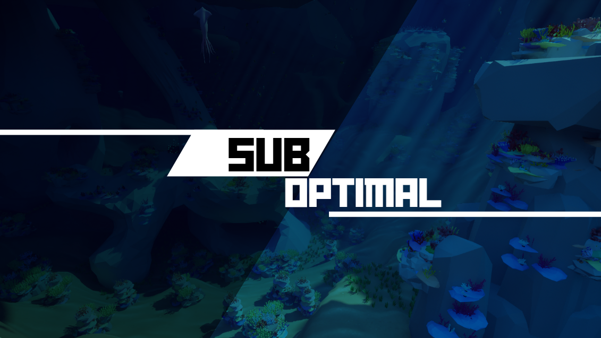
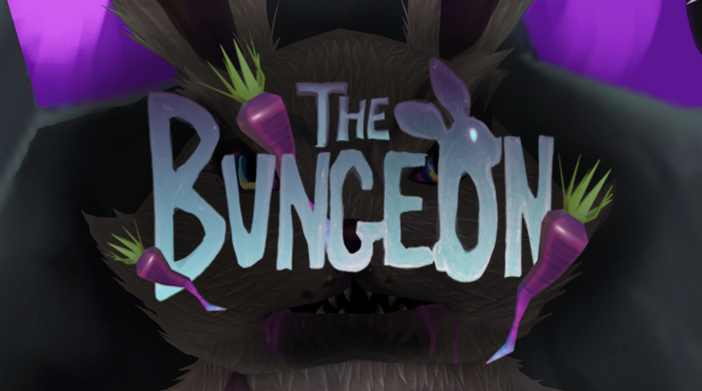
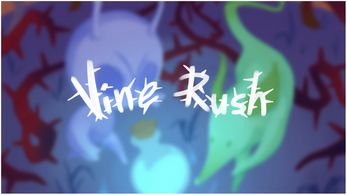
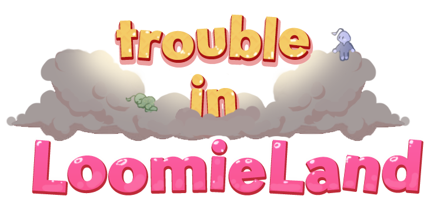
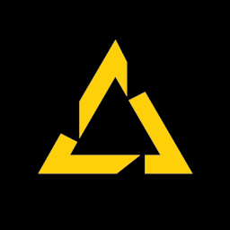
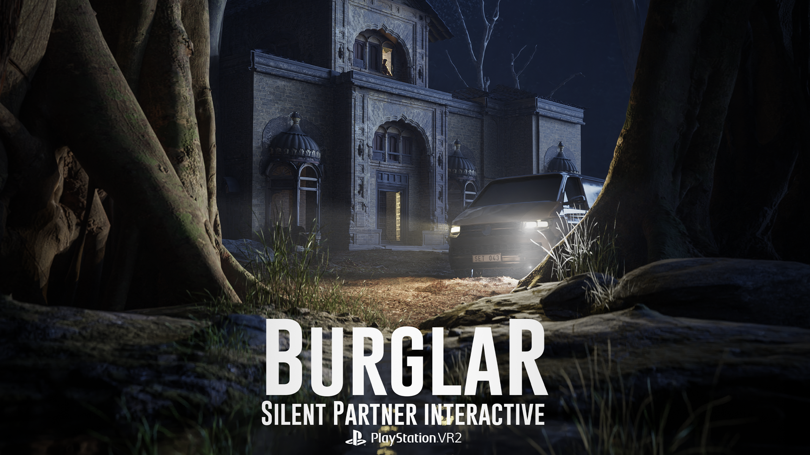
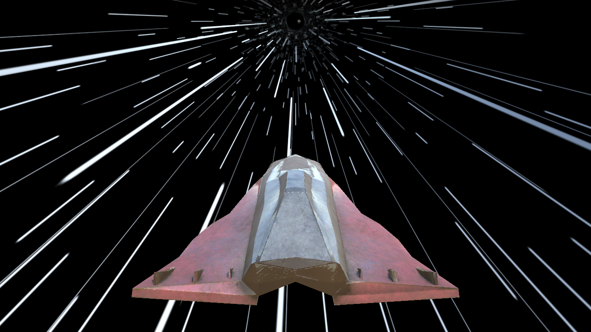

Games
Scroll to explore →

Learn More
4 Weeks
9
Suboptimal is a 4-player online co-op game centered around a submarine and the hunt for treasure.
I was responsible for UI and did a ton of bugfixing and repairing broken designer code.

Learn More
7 Weeks
18
Ok'Rhams Creation is a gritty first person puzzle shooter where the player must use spells to solve puzzles and defeat monsters.
I worked on the underlying save system and spells system, and fixed lots of bugs.

Learn More
4 Weeks
17
The Bungeon is a silly dungeon crawler where the player must find carrots to feed the evil bunny overlord.
I worked on systems as well as generalist duct-taping and putting out fires.

Learn More
3 Weeks
14
Vine Rush is a 2 player racing game developed for the Xbox Adaptive Controller.
I worked with systems, including the inventory, a manager for VFX and SFX and a respawning system.

Learn More
4 Weeks
1
Edge of Divinity is a top-down game all about maximizing your momentum with precise inputs.
I made everything myself!
(except some of the art)

Learn More

9 Weeks
17
Trouble in Loomie Land is a cutesy 3D platformer that can be played co-op with a friend!
My responsibilities were mostly in prototyping, gameplay documentation and implementation.

Learn More
6 Weeks
9
Morris: Mortality Rate is an isometric roguelite shoot-em-up crawler with procedurally generated levels.
I was project owner, and responsible for all non-level-related design.

Learn More
9 Weeks
18
Burglar is a VR stealth game with horror elements where you break into homes and steal valuables.
My main responsibilities were UX and UI design.

Itch Page
Spacetram is a tiny infinite runner game I created by myself in a single week.
I wanted to challenge myself to create a complete game in Unity with limited time and still get all the necessary bits in there.